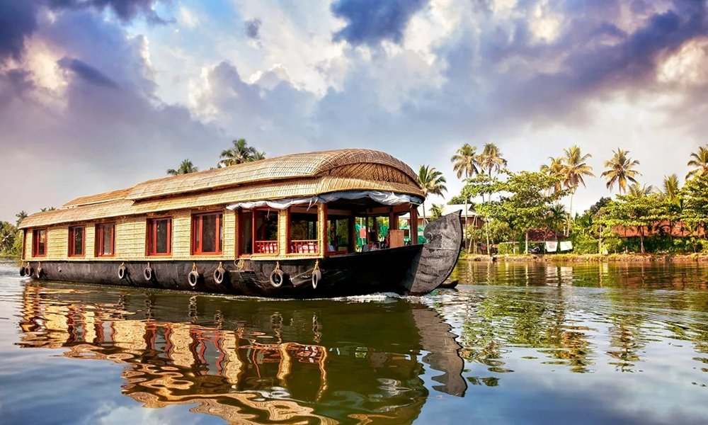

Vembanad Lake
Take in the broad lake landscape and the changing light across the water.

KERALA FIELD NOTES · 02 / 06
A quieter world by the water.
LAKESIDE VILLAGES & BIRDLIFEVEMBANAD LAKE
A lakeside landscape of coconut palms, village waterways and birdlife around Vembanad.
Wide lake views open beyond green banks, coconut groves and smaller canals. Fishing boats move across the water, while narrow lanes connect homes and village life along the shore. Mornings can be especially atmospheric around the wetlands.

THE STORIES BENEATH THE SCENERY
Kumarakom’s story is closely tied to Vembanad Lake and the communities that have relied on fishing, farming and water transport. Over time, the region became known to visitors for its backwater landscape and bird sanctuary. Traditional livelihoods remain an important part of the area’s character.
More background on Kumarakom →LOOK A LITTLE CLOSER
Take in the broad lake landscape and the changing light across the water.
A wetland habitat known for resident and seasonal birds. Sightings vary with season and time of day.
Notice small canals, coconut palms and the daily connections between people and water.
A FEW FRAMES FROM KUMARAKOM
BEFORE YOU GO
The cooler months are generally pleasant. Bird activity varies by species and season; check locally before planning a sanctuary visit.
Bring binoculars for birdwatching and keep voices low near wildlife. Water activities depend on weather and local conditions.
CURIOUS ABOUT KUMARAKOM?
Ask your local guide about the places that interest you.
Contact your guide →THERE’S MORE TO DISCOVER

Chinese fishing nets, old trading streets and a waterfront shaped by centuries of exchange.
Discover Kochi
Palm-lined canals, traditional houseboats and everyday life woven around the backwaters.
Discover Alleppey
Tea-covered hills, winding roads and cool mountain landscapes in the Western Ghats.
Discover Munnar